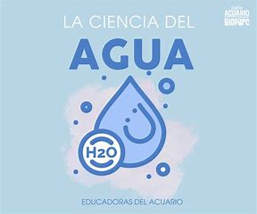

La ciencia en el agua
El agua es un elemento vital para la vida en la Tierra, y su estudio es esencial para comprender su distribución, comportamiento y conservación. Los avances científicos en la investigación del agua han permitido optimizar el uso de este recurso, comprender su impacto en el medio ambiente y encontrar soluciones para los problemas de escasez y contaminación.
El Agua y la Biodiversidad Acuática
- Contaminación del agua: El exceso de nutrientes, los productos químicos tóxicos y los desechos plásticos son amenazas para los ecosistemas acuáticos y la fauna que depende del agua.
- Acidificación de los océanos: El aumento de CO2 en la atmósfera está provocando la acidificación de los océanos, afectando a organismos como los corales, moluscos y peces.
- Sobrepesca: La sobreexplotación de los recursos acuáticos altera el equilibrio de los ecosistemas marinos y de agua dulce.

Avances Científicos en la Desalinización del Agua
Con la creciente escasez de agua en muchas regiones del mundo, la desalinización del agua ha emergido como una solución tecnológica clave. La desalinización es el proceso de eliminar la sal del agua marina para convertirla en agua potable. Algunas de las tecnologías utilizadas para la desalinización incluyen:
- Ósmosis inversa: Utiliza una membrana semipermeable para separar las sales del agua mediante presión.
- Destilación: Consiste en calentar el agua para que se evapore y luego condensarla, separando la sal y otros contaminantes.
- Electrodiálisis: Este proceso utiliza corriente eléctrica para mover los iones de sal a través de membranas selectivas, obteniendo agua potable.
La Ciencia en la Conservación del Agua
Los científicos están trabajando en diversas soluciones para mejorar la conservación del agua y promover un uso más eficiente del recurso. Algunas de estas soluciones incluyen:
- Captura de agua de lluvia: La recolección y almacenamiento de agua de lluvia en cisternas o depósitos es una forma eficaz de conservar agua para su uso doméstico y agrícola.
- Agricultura de conservación: Prácticas como la siembra directa y el uso de cultivos de cobertura ayudan a conservar el agua en los suelos, reduciendo la evaporación y mejorando la absorción.
- Reutilización del agua: La reutilización de aguas grises (provenientes de lavabos, duchas, etc.) en la agricultura o en la industria es una técnica que contribuye a la conservación del agua potable.